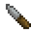
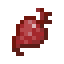
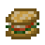

샌드위치
샌드위치는 2개의 빵과 3개의 샌드위치 재료 음식으로 만들 수 있는 음식으로, 재료에는 채소, 익힌 고기, 그리고 치즈가 들어갈 수 있습니다.




2

작업대에서 제작할 수 있는 샌드위치 제작법.
음식의 영양소, 물, 그리고 포화도는 샌드위치의 영양 성분으로 합쳐집니다. 빵의 비중은 50%인 반면, 재료 음식은 80%의 비중을 차지합니다. 썩은 재료로도 샌드위치를 만들 수 있습니다. 썩은 재료로 샌드위치를 만들어도 재료가 신선하다고 여겨지며, 다시 처음부터 상하기 시작합니다.